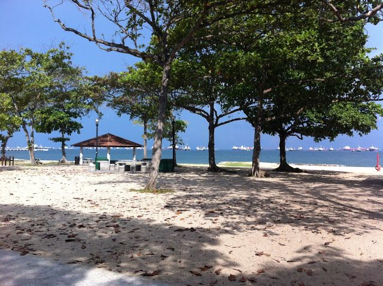
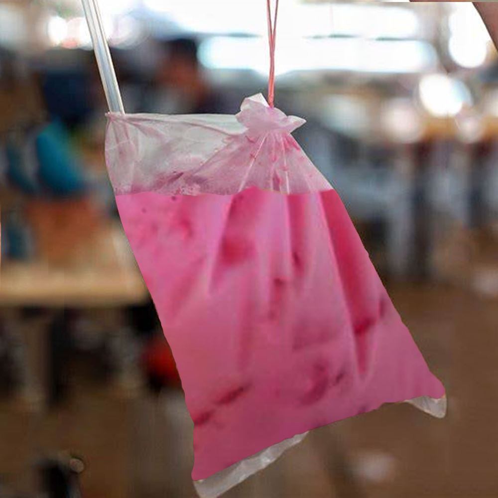
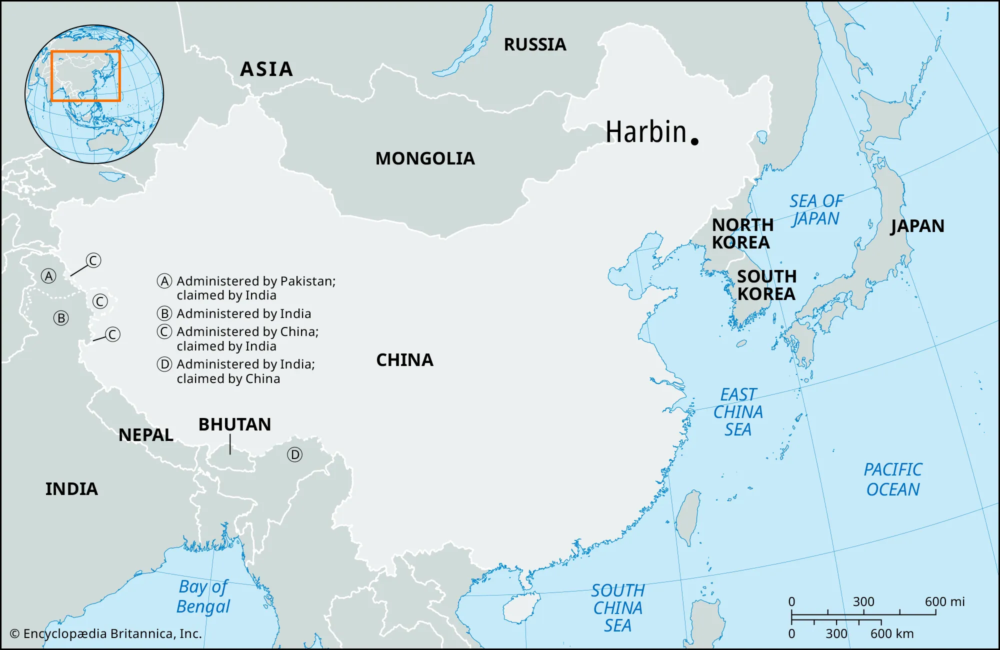
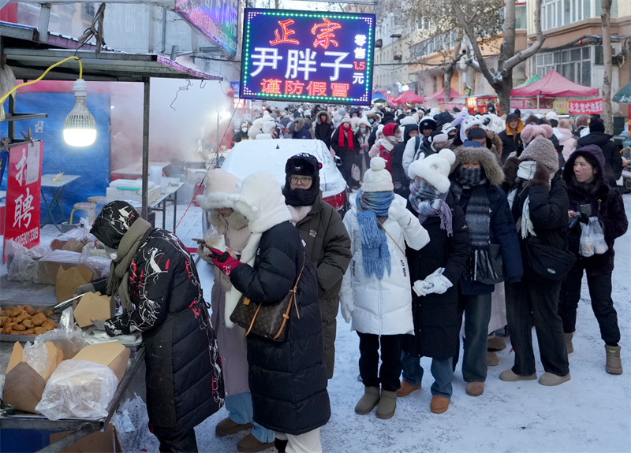

I grew up in Shanghai, China, and moved back to Singapore, Singapore, for three years before coming to New York City for school at Parsons.
~Singapore East Coast Park~
I was studying Advertising in Singapore at the Nanyang Academy of Fine Arts, which made me dislike working in the advertising industry (turns out i will never be able to escape from it anyways).
not that you asked for it but here is Yusof Ishak, our first prime minister after independence from Malaysia, printed on our bills.
~Yusof!~
One of my favorite crazy looking drinks from Singapore–bandung: milk with rose syrup
~Bandung!!!~
You might be curious why I am fluent in Mandarin (no you are not but i am still going to tell you so I can segue into my story), it is because my mother is from Harbin, China. Below are some of the best things about Harbin, in my humble opinion.
~Location in China~
~Ice Festival Sculpting in Progress~
~Morning Markets 5am-9am~
Anyways that's about my background or at least my introduction as a city girl but also an island girl because i simply posess the ability to own both.